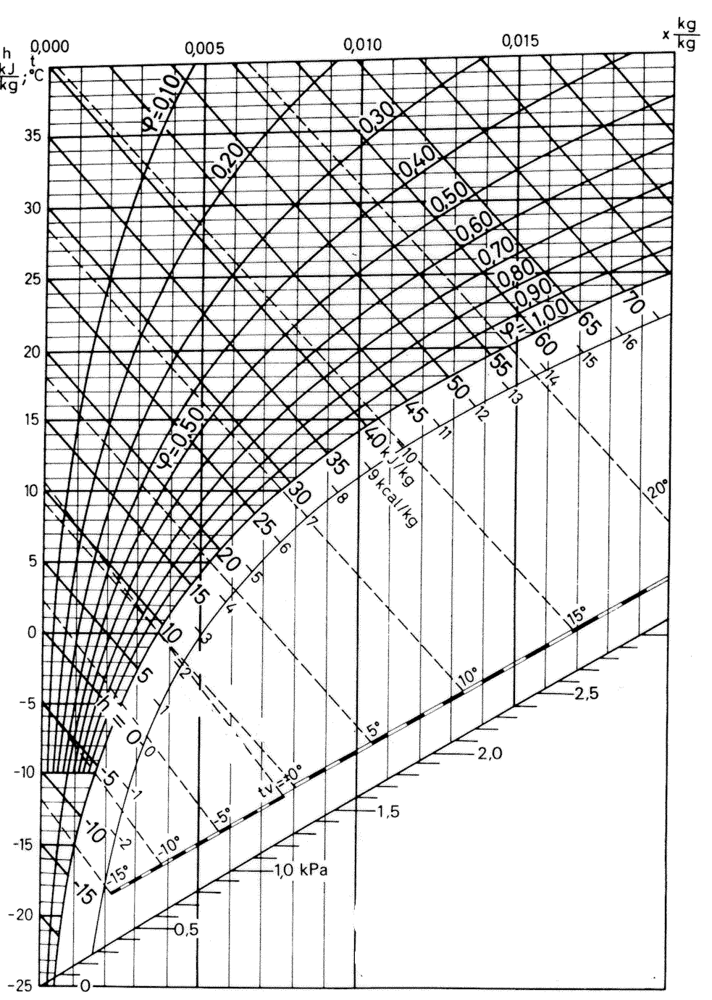
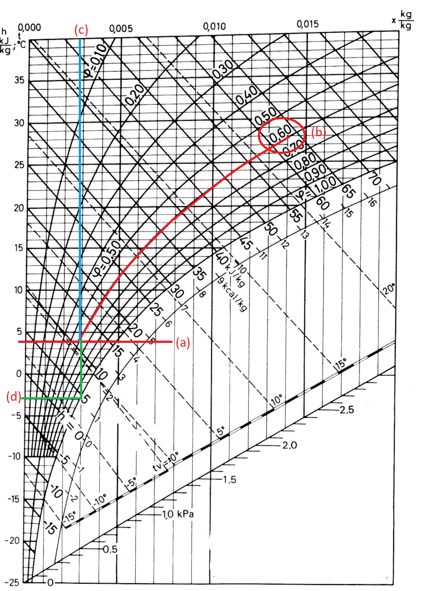
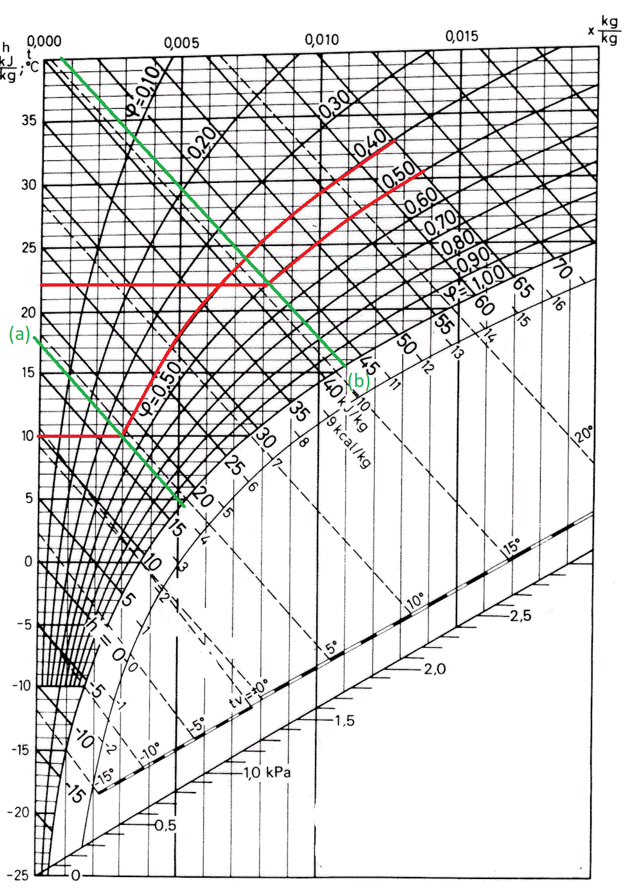
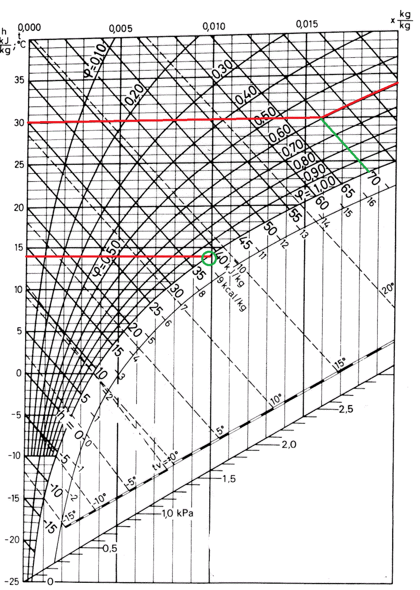
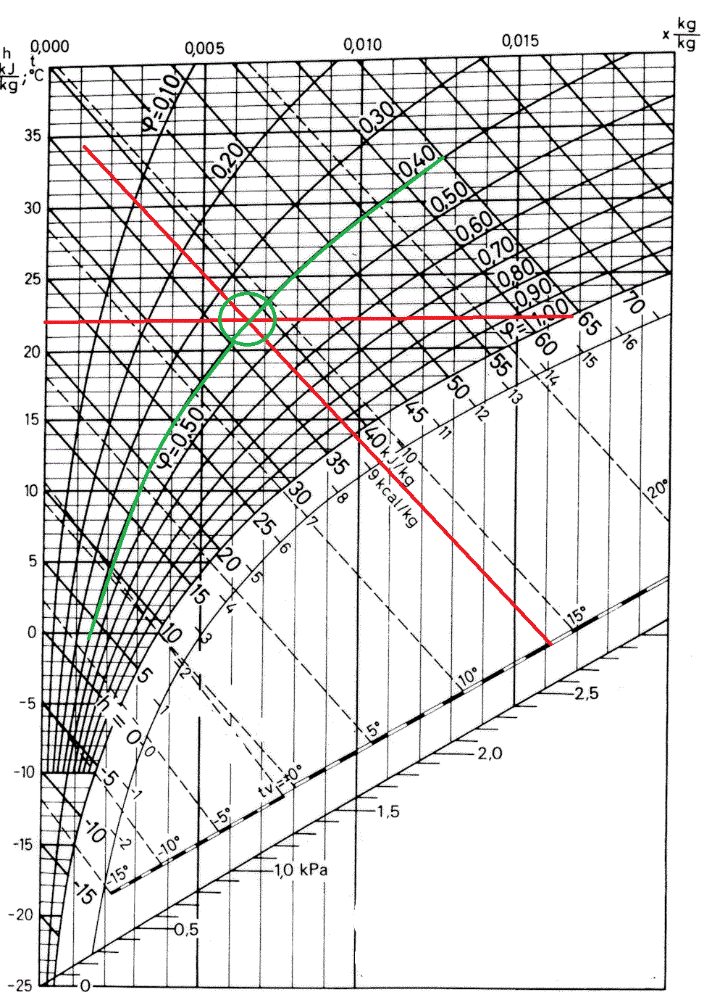

Mollier-diagrammi
Contents
Mollier-diagrammi#
Mollier-diagrammi on kuvaaja, johon on koottu ilman ominaisuuksia eri olosuhteissa. Diagrammista on olemassa erilaisia versioita, mutta yleinen muoto on sellainen, jossa vaaka-akselilla on ilman absoluuttinen kosteus ja pystyakselilla lämpötila. Kuvaajaan piirretyt kaarevat viivat vastaavat erilaisia suhteellisia kosteuksia. Suhteellista kosteutta 100 % vastaavalta käyrältä voidaan lukea kastepiste.
Vinot viivat kuvaavat entalpian vakioarvoja. Entalpia \(H\) määritellään: \(H=U+pV\), missä \(U\) on kaasun sisäenergia, \(p\) paine ja \(V\) tilavuus. Tehty työ voidaan suoraan laskea entalpian muutoksen \(\Delta H\) ja massan \(m\) avulla: \(W=m \Delta H\).
 Kuvan lähde: The Engineering Toolbox
Diagrammin käyttö#
Tutustutaan Mollier-diagrammien käyttöön esimerkkien avulla.
Esimerkki
Eräänä päivänä ulkolämpötila on +4 astetta ja ilman suhteellinen kosteus 60 %. Määritä kuvaajasta ilman absoluuttinen kosteus ja kastepiste.
Ratkaisu

Piirretään kuvaajalle vaakasuora viiva 4 asteen lämpötilan kohdalle (a). Seurataan 60 % suhteellista kosteutta vastaavaa käyrää (b). Piirretään lämpötilaviivan ja suhteellisen kosteuden käyrän risteyskohdasta suora viiva ylöspäin absoluuttisen kosteuden asteikolle (c). Asteikolta voidaan lukea absoluuttinen kosteus: noin 0.003 kg/kg eli 3 g/kg.
Kastepisteen saa piirtämällä lämpötilaviivan ja suhteellisen kosteuden käyrän risteyskohdasta suoran viivan alaspäin. Viiva lopetetaan 100 % suhteellisen kosteuden käyrää vastaavaan kohtaan. Piirretään tästä kohdasta viiva suoraan vasemmalle (d) ja luetaan kastepiste lämpötila-asteikolta. Tässä tapauksessa kastepiste on -3 astetta.
Esimerkki
Ilmastointilaitteisto ottaa 10-asteista ulkoilmaa, jonka suhteellinen kosteus on 40 %, tilavuusvirralla 10 kuutiometriä minuutissa. Laite lämmittää ilman 22 asteeseen ja sen jälkeen lisää siihen kuumaa höyryä siten, että suhteellinen kosteus nousee 50 %:iin. Laske laitteen teho.
Ratkaisu

Etsitään 10 asteen lämpötilaa vastaavan suoran ja 40 % suhteellista kosteutta vastaavien käyrien risteyskohta. Piirretään siitä viiva vinosti entalpian vakiosuorien suuntaisesti (a). Päädytään suunnilleen arvoon \(18~\text{kJ/kg}\). Piirretään vastaavat viivat 22 asteen lämpötilalle ja 50 % suhteelliselle kosteudelle (b). Entalpian arvoksi voidaan arvioida noin \(42~\text{kJ/kg}\).
Entalpian muutos on siis \(\Delta H =(42-18)~\text{kJ/kg} = 24~\text{kJ/kg}\). Aiemmin ratkaistiin ilman massavirraksi 12.5 kg/min.
Tehoksi saadaan
\(P=\frac{W}{t}=\frac{m \Delta H}{t}=\frac{12.5~\text{kg}\cdot 24000~\frac{\text{J}}{\text{kg}}}{60~\text{s}}=5000~\text{W}\)
Tehontarpeeksi saatiin siis sama 5 kW kuin aiemmin eri tavalla laskemalla.
Esimerkki
Ilmastointilaitteen läpi kulkee 30-asteista huoneilmaa, jonka suhteellinen kosteus on 60 %, tilavuusvirralla 10 kuutiometriä minuutissa. Laite jäähdyttää ilman 14 asteeseen. Laske laitteen teho.
Ratkaisu

Kaaviosta nähdään, että 30 asteen lämpötilaa ja 60 % suhteellista kosteutta vastaava entalpia on noin \(69~\text{kJ/kg}\). Kastepiste on kaavion mukaan noin 21 astetta, joten sitä viileämmässä, eli myös 14 asteessa, suhteellinen kosteus on 100 %. Entalpian arvo 14 asteessa ja 100 % kosteudessa on kuvasta katsottuna noin \(69~\text{kJ/kg}\). Niinpä entalpiaeroksi tulee \(\Delta H = 30~\text{kJ/kg}\).
Massavirraksi laskettiin aiemmin 11.7 kg/min. Teho on siis
\(P=\frac{11.7~\text{kg}\cdot 30000~\frac{\text{J}}{\text{kg}}}{60~\text{s}}=5850~\text{W}\)
Pieni ero aiemmin laskettuun samaan tehtävään johtuu siitä, että entalpian arvoja on vaikea lukea kaaviosta tarkasti.
Suhteellisen kosteuden mittaaminen#
Mollier-diagrammissa kulkee viistossa erillinen lämpötila-asteikko, ns. märkälämpötila-asteikko. Sitä voidaan käyttää apuna ilman kosteuden määrittämiseen. Ensin mitataan huoneen lämpötila eli kuivalämpötila. Sen jälkeen pitää selvittää märkälämpötila. Tavallisen lämpömittarin ympärille kiedotaan vedellä kasteltu kangaspala. Kankaasta haihtuu vettä, ja haihtumiseen sitoutuu lämpöä. Tällöin lämpömittarin näyttämä lukema laskee. Märkälämpötila on lukema, joka vakiintuu mittariin.
Mollier-kaaviosta luetaan pystyasteikolta kuivalämpötila. Piirretään siitä viiva suoraan oikealle. Sitten piirretään suora märkälämpötila-asteikolta edellä piirretylle viivalle. Viivojen risteyskohta kertoo ilman suhteellisen kosteuden.
Esimerkki
Huoneen lämpötila normaalisti mitattuna on 22 astetta. Märkälämpötila on 14 astetta. Mikä on huoneilman suhteellinen kosteus?
Ratkaisu

Kuivalämpötilan ja märkälämpötilan kohdilta piirretyt suorat leikkaavat kohdassa, joka vastaa suunnilleen 40 % suhteellisen kosteuden käyrää.